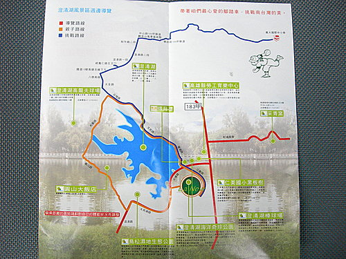
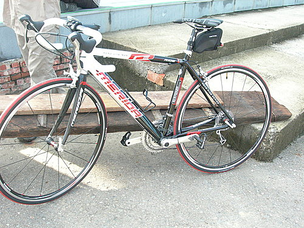

河東獅於8/31組隊參加美利達公司所舉辦之澄清湖環湖親子遊後，
很多大朋友因而錯過該日之自澄清湖—觀音山—義守大學之挑戰路線，
為了彌補大家的缺憾，
本車隊特地於隔週9/7一大早自行補辦一場挑戰路線之旅。
6點30分於澄清湖門口集合出發，
沿大埤路、鳳仁路、國道10號高架橋一路挺進大社，
識途老馬之車友進哥並帶領大家騎乘一條幽靜的田園小徑，
繞過幢幢的田園農舍及深遂的竹林，
轉眼間已到達觀音山風景區，
在寺廟前稍做休息補給後，
大伙便沿著縣道186甲往大樹義守大學繼續前進，
觀音山至義大之道路，
路面寬闊車輛稀少，
起起伏伏的丘陵綠地，
真是騎自行車緞練體力的好路線，
假日騎乘其中，
沿途車友絡繹不絕，熱鬧非凡。
本路線於仁翔山莊及接近義大處有二段長爬坡，
初體驗的車友，
騎乘至此，經常用氣力用盡之慨。
河東獅本日之挑戰路線來回約36公里，
騎乘時間約90分鐘，
在歡樂談笑及鼓舞聲中，
大家均能圓滿順利挑戰成功，
親愛的朋友，
您，不妨也來趟義大挑戰之旅吧！

@挑戰路線圖
@觀音山風景區之大雄寶殿
@達烘的小摺也可輕輕鬆鬆上義大

@小揚的路得905公路車
@紀元兄之捷安特新寶馬，27段碟剎變速，shimono SLX變速器。
@進哥之愛車--美利達X5登山車

@仁翔山莊之長坡。
@父與子
@終點站--義守大學校園廣場
@國二的小帥哥亦奮力不懈的騎完全程。